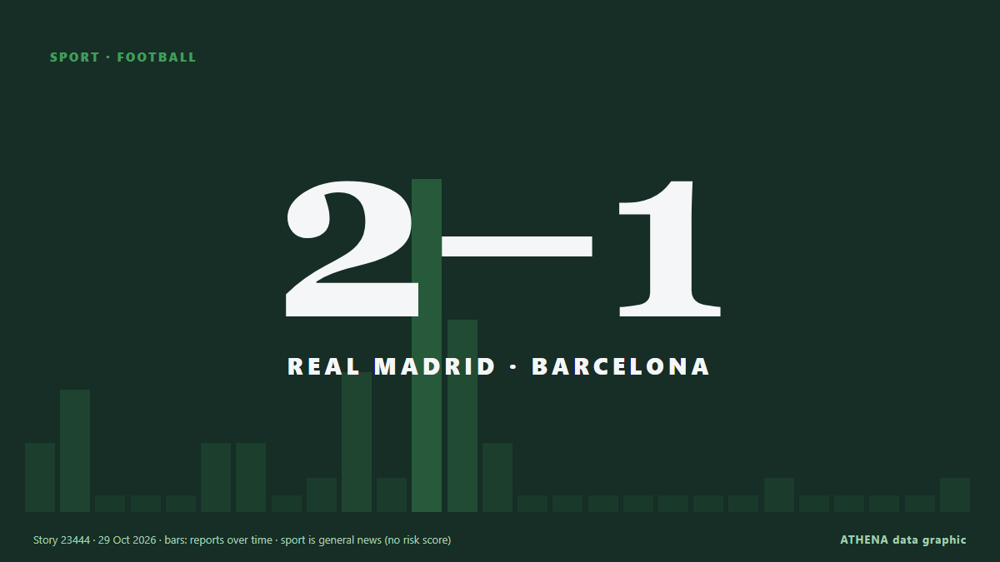

Real Madrid beat Barcelona 2-1 in La Liga Clasico

Kylian Mbappe struck twice to earn Jose Mourinho's Real Madrid a 2-1 Clasico victory over La Liga leaders Barcelona on Sunday at Camp Nou, cutting the gap to three points. из Vanguard
Независимые источники: 29 изданий в 21 стране, с 23 окт.; первым сообщил Express Tribune; освещение идёт на спад. Спорт и культура публикуются без оценки риска. Уверенность — 93 % (высокая); подтверждают независимые источники: 29 изданий, средняя надёжность источников — 74 %. Кто сообщал: 11 СМИ в стране Нигерия · Nigeria, 6 СМИ в стране Катар · Qatar, 4 СМИ в стране Сингапур · Singapore. Освещение шло с 23 окт. по 26 окт., 70 ч.
Что изменилось: 1 новое сообщение за 24 часа до 29 окт..
Заголовки приводятся на английском языке, как они были опубликованы.
Коротко в цифрах
Отобрано, оценено и написано по опубликованной методологии ATHENA. Ни один редактор не вмешивается в отдельные события. Как это создаётся ›
| 23 Oct 03:27 UTC | 3 |
|---|---|
| 23 Oct 09:27 UTC | 6 |
| 23 Oct 15:27 UTC | 0 |
| 23 Oct 21:27 UTC | 0 |
| 24 Oct 03:27 UTC | 0 |
| 24 Oct 09:27 UTC | 3 |
| 24 Oct 15:27 UTC | 3 |
| 24 Oct 21:27 UTC | 0 |
| 25 Oct 03:27 UTC | 1 |
| 25 Oct 09:27 UTC | 7 |
| 25 Oct 15:27 UTC | 1 |
| 25 Oct 21:27 UTC | 18 |
| 26 Oct 03:27 UTC | 10 |
| 26 Oct 09:27 UTC | 3 |
| 26 Oct 15:27 UTC | 0 |
| 26 Oct 21:27 UTC | 0 |
| 27 Oct 03:27 UTC | 0 |
| 27 Oct 09:27 UTC | 0 |
| 27 Oct 15:27 UTC | 0 |
| 27 Oct 21:27 UTC | 0 |
| 28 Oct 03:27 UTC | 0 |
| 28 Oct 09:27 UTC | 1 |
| 28 Oct 15:27 UTC | 0 |
| 28 Oct 21:27 UTC | 0 |
| 29 Oct 03:27 UTC | 0 |
| 29 Oct 09:27 UTC | 0 |
| 29 Oct 15:27 UTC | 1 |
Откуда эти цифры
Значимость
Риск
Уверенность
Освещение — кто сообщил и когда
заголовок в оригинале · открывает источник- Express Tribune · Пакистан · PakistanBarcelona eye Clasico statement against Real Madrid
- Asharq Al-Awsat (English) · Саудовская Аравия · Saudi ArabiaBarcelona Aiming to Put Real Madrid Out of Sight in Clasico
- Punch · Нигерия · NigeriaLa Liga: El Clásico always 50-50, says Courtois
- Punch · Нигерия · NigeriaBarcelona aiming to put Real Madrid out of sight in Clasico
- Premium Times · Нигерия · NigeriaEl Clásico: UNILAG to host watch party as Barcelona face Real Madrid
- Al Jazeera English · Катар · QatarEl Clasico: All to know about the rivalry between Barcelona and Real Madrid
- CNA (Channel NewsAsia) · Сингапур · SingaporeMourinho seeks Real Madrid turning point in Clasico full of new faces
- Cyprus Mail · Кипр · CyprusMourinho seeks Real Madrid turning point in Clasico full of new faces
- IOL · Южно-Африканская Республика · South AfricaBarcelona prepare for El Clasico test against Real Madrid as lead hangs in balance
- Punch · Нигерия · NigeriaReal Madrid still a work in progress, says Mourinho ahead of El Clásico
- Al Jazeera English · Катар · QatarBarcelona vs Real Madrid: Top 5 El Clasico matches between La Liga giants
- IOL · Южно-Африканская Республика · South AfricaMourinho plays down Real Madrid comparisons with Barcelona before Clasico
- Al Jazeera English · Катар · QatarBarcelona vs Real Madrid: La Liga – El Clasico preview, predictions, teams
- Punch · Нигерия · NigeriaEl Clásico: No specific plan to stop Yamal, says Mourinho
- Arab News · Саудовская Аравия · Saudi ArabiaAlvarez fires Atletico to win against Deportivo
- Al Jazeera English · Катар · QatarEl Clasico awaits a Yamal vs Mbappe showdown on Mourinho’s return to La Liga
- CNA (Channel NewsAsia) · Сингапур · SingaporeReal Madrid goalkeeper Courtois to miss Clasico due to illness
- Cyprus Mail · Кипр · CyprusReal Madrid goalkeeper Courtois to miss Clasico due to illness
- Vanguard · Нигерия · NigeriaReal Madrid’s Courtois to miss El Classico due to illness
- Punch · Нигерия · NigeriaMadrid’s Courtois ruled out of El Clásico with illness
- IOL · Южно-Африканская Республика · South AfricaMourinho faces first Barcelona Clasico since Real Madrid return
- Channels TV · Нигерия · NigeriaReal Madrid’s Courtois Down With Flu, Out Of Clasico
- Al Jazeera English · Катар · QatarBarcelona 1-2 Real Madrid: La Liga El Clasico – as it happened
- Shafaq News (English) · Ирак · IraqEl Clasico: Real Madrid ends Barcelona's perfect start
- Evening Standard (London) · Великобритания · United KingdomBarcelona 1-2 Real Madrid: Kylian Mbappe brace seals huge three points in Clasico thriller
- Vanguard · Нигерия · NigeriaReal Madrid beat Barcelona 2-1 in La Liga Clasico
- CNA (Channel NewsAsia) · Сингапур · SingaporeReal Madrid defeat Barcelona at Camp Nou to halve gap to LaLiga leaders
- The Namibian · Намибия · NamibiaReal Madrid beat Barcelona in La Liga Clasico
- Al Jazeera English · Катар · QatarReal Madrid beat Barcelona 2-1 at Camp Nou to halve gap to La Liga leaders
- Evening Standard (London) · Великобритания · United KingdomBarcelona vs Real Madrid LIVE: Clasico result, latest updates and fan reaction
- Channels TV · Нигерия · NigeriaMbappe’s Brace Helps Real Madrid Beat Barcelona In La Liga Clasico
- Gulf News · ОАЭ · United Arab EmiratesVideo: Real Madrid beat Barcelona in La Liga Clasico
- Anadolu Agency (English) · Турция · TurkeyMbappe brace gives Real Madrid 2-1 El Clasico victory
- Punch · Нигерия · NigeriaEl Clásico: Mbappé scores brace as Madrid Beat Barcelona 2-1
- Gulf News · ОАЭ · United Arab EmiratesJose Mourinho recreates iconic knee-slide celebration at Camp Nou after Real Madrid stun Barcelona in El Clasico
- CNA (Channel NewsAsia) · Сингапур · SingaporeMourinho gives Real Madrid the answers to Barcelona test in return to Clasico
- BBC News · Великобритания · United KingdomMourinho keeps Clasico midas touch 13 years on as La Liga heats up
- Jamaica Observer · Ямайка · JamaicaMbappe double helps Real Madrid stun Barca in La Liga Clasico
- Express Tribune · Пакистан · PakistanReal Madrid beat Barcelona in La Liga Clasico
- MyJoyOnline · Гана · GhanaEl Clásico: Kylian Mbappe scores twice to end Laliga leaders’ winning start